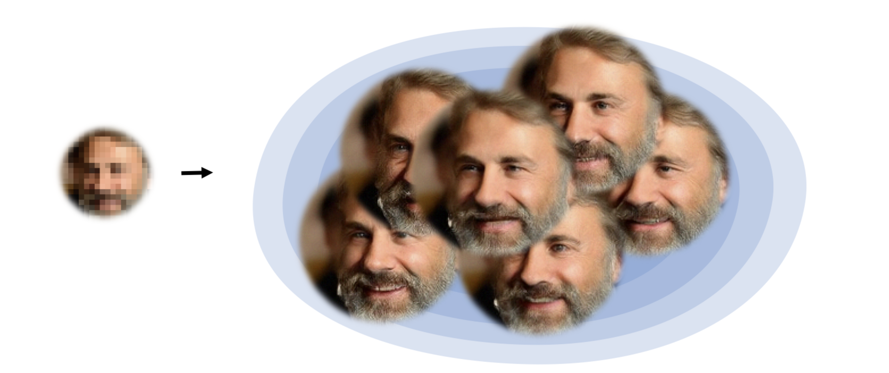

Publications
IF-MDM: Implicit Face Motion Diffusion Model for High-Fidelity Realtime Talking Head Generation
arXiv 2024.12


SRFlow-DA: Super-Resolution Using Normalizing Flow with Deep Convolutional Block
CVPR Workshop 2021
